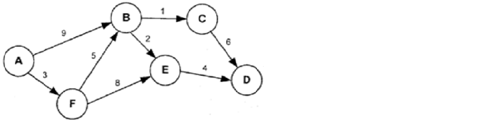
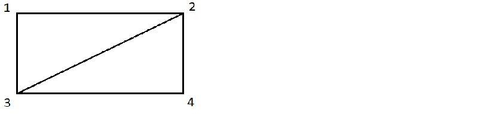

|
Задача 1.
Снегоуборочная машина чистит улицы в коттеджном поселке, состоящем из девяти кварталов (три на три).
Кварталы квадратные со стороной 200 метров. Вычислите наименьший путь в метрах, который придется пройти
машине по всем улицам, чтобы очистить их от снега, если она начинает и заканчивает работу в углу поселка.
Ответ:
|
Задача 2.
В стране 50 крупных городов, из каждого выходит по три дороги. Сколько всего дорог в этой стране?
Ответ:
|
|
Задача 3.
В некоторой области девять городов с названиями: 1,2,3,4,5,6,7,8,9. Известно,
что между двумя городами проложена дорога только в том случае, если двузначное число,
составленное из номеров городов, кратно трем. Какие города нужно проехать, чтобы
добраться из 9 в 1?
Ответ:
|
Задача 4.
«Проказница мартышка, осел, козел да косолапый мишка затеяли сыграть квартет…
Ударили в смычки, а толку нет»… Сколько раз пересаживались музыканты, если они
перебрали все возможные варианты, и лишь медведь оставался на своем месте?
Ответ:
|
|
Задача 5.
 На рисунке изображены расстояния между населенными пунктами А, В, С, D, E и F.
Двигаться по дорогам можно только в направлениях, которые указаны стрелочками.
Водитель едет из пункта А в пункт D. Каково минимальное расстояние, которое ему
придется проехать?
Ответ:
|
Задача 6.
 На
спортивных соревнованиях 4 контрольных пункта, как показано на рисунке.
На маршрутах 134 и 342 одинаковое количество препятствий: по 8. На маршруте 132
– 20 препятствий, а на маршруте 123 – 41 препятствие. По какому маршруту нужно
бежать спортсменам, чтобы добраться из пункта 1 в пункт 2 с минимальным количеством
препятствий?
Ответ:
|